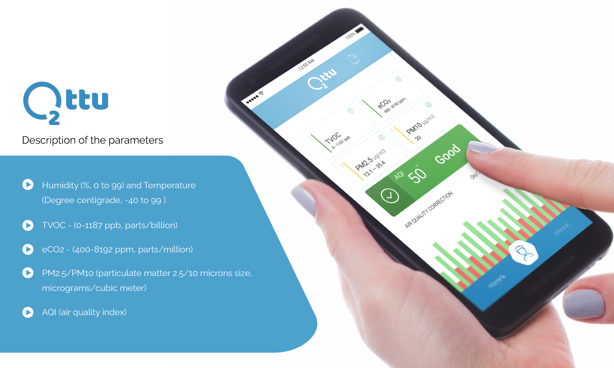
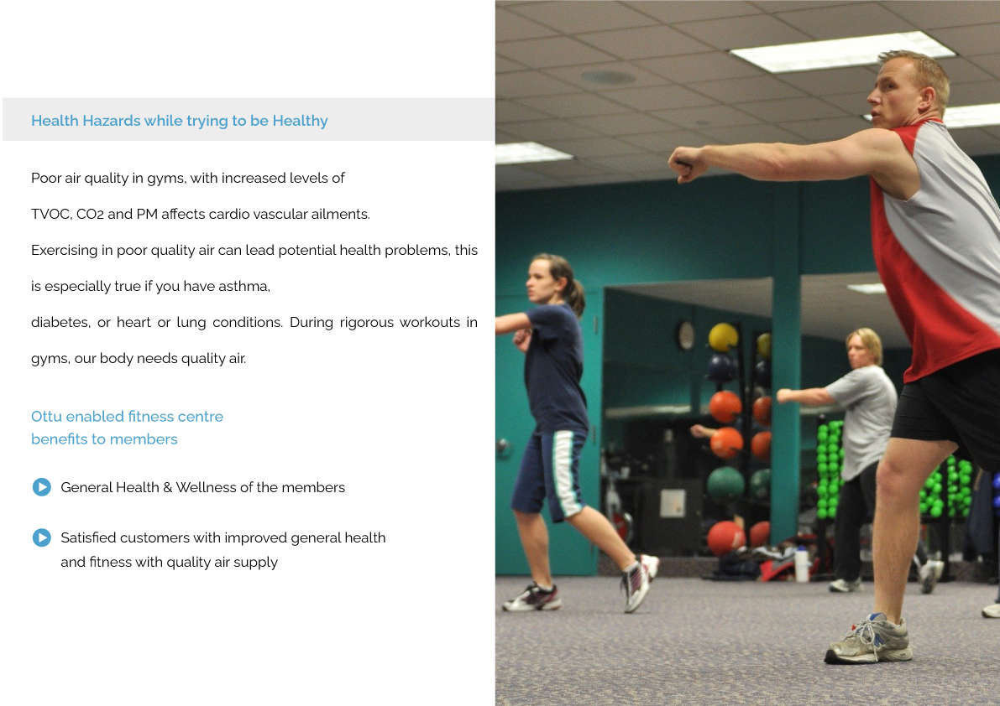
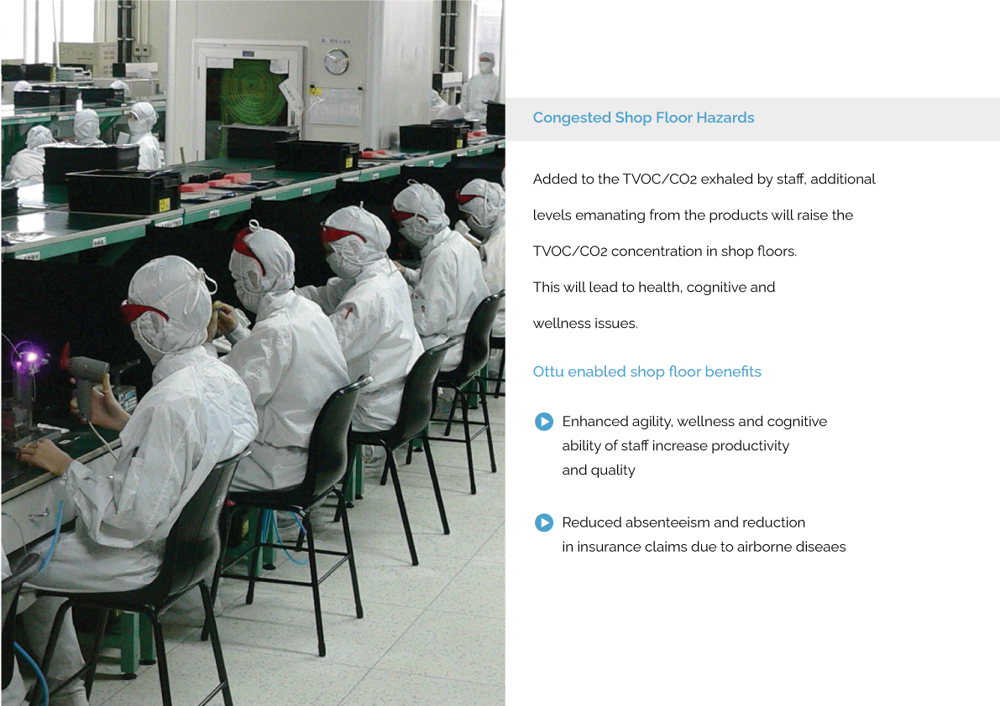

OTTU
The Automated Air Quality Conditioner from Avatar
Ottu is a unique Indoor Air Quality Conditioner from Avatar Renewables which not only monitors the indoor air quality but controls the supply of fresh air to ensure balanced quality air supply in indoors. The device is designed to display TVOC (Total Volatile Organic Compounds), eCO2 (equivalent CO2), PM 2.5/10 (Particulate Matter), Humidity and Temperature. Ottu also records these data with time/date stamp locally as well as remotely through IoT. Ottu is used for efficient air quality management of office spaces, conference rooms, gymnasiums, multiplexes, auditoriums and homes. Ottu is capable of automatically turning ON/OFF filtered air supply in conjunction with HVAC or BMS. The remote management and reporting of Indoor Air Quality (IAQ) maintain quality work environment ensuring compliance with health standards.


Downlaod Air Quality Conditioner OTTU Brochure